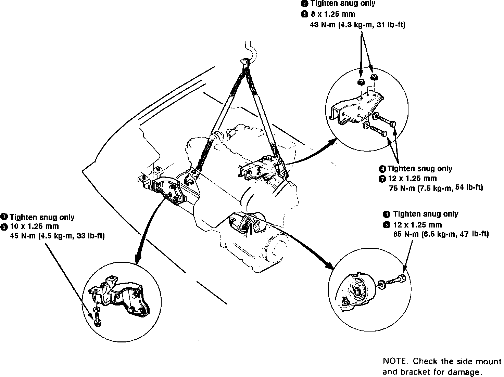

Engine: Service and Repair
Fig. 1 Relieving fuel system pressure:

1. Disconnect both battery cables.
2. Disconnect windshield washer tube, then scribe hood hinge locations and remove hood.
3. Drain engine oil, cooling system and transaxle fluid into suitable containers. Install engine oil and transaxle drain plugs using new washers.
4. Remove air intake duct and front air intake duct.
5. Relieve fuel system pressure by loosening the service bolt on top of fuel filter, Fig. 1, one complete revolution, then disconnect fuel lines from filter. Remove distributor and spark plug wires
6. Loosen throttle cable locknut and adjusting nut, then slip cable end out of throttle bracket and accelerator linkage. Use care to avoid bending cable when removing it.
7. Remove power steering pump attaching bolts and drive belt, then unfasten pump and position aside, leaving hose connected.
8. Remove center console assembly, place shift lever in reverse, then remove lock pin from end of shift cable. Disconnect driveshaft from transaxle.
9. Disconnect radiator hoses, heater hoses, transaxle oil cooler lines and speedometer cable. Do not remove speedometer cable holder, as the gear may fall into transaxle housing.
10. On models equipped with A/C, unfasten A/C compressor and position aside, leaving refrigerant lines attached.
11. On all models, disconnect alternator wiring, then remove alternator attaching bolt and the alternator.
12. Attach suitable hoist equipment to engine block brackets and raise hoist just enough to remove slack from chain.
13. Remove rear transaxle mount bracket and the front transaxle mount attaching bolts.
14. Remove engine side mount attaching bolt.
15. Disconnect any remaining vacuum lines, coolant hoses, fuel lines and electrical connectors from engine.
16. Raise engine approximately six inches and ensure all hoses and wires have been disconnected from engine and transaxle.
17. Carefully lift engine and transaxle assembly and remove from vehicle.
Fig. 2 Engine mount bolt torque sequence. Integra:

18. Reverse procedure to install, noting the following:
a. Torque engine mount bolts to specifications, in sequence shown in Fig. 2.
b. Install new spring clips on each end of driveshaft and ensure each clip snaps properly into place.
c. Bleed air from cooling system at bleed bolt with heater valve open.